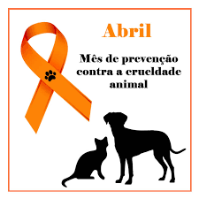

Abril Laranja |
|
Um resumo sobre o abril LaranjaAbril Laranja é o mês dedicado à conscientização e prevenção contra a crueldade aos animais. O Brasil ocupa a terceira posição no ranking mundial de população pet. Atualmente, diversos projetos de lei estão em análise no Congresso Nacional, com o objetivo de melhorar a qualidade de vida dos animais de estimação e ampliar a conscientização de que a violência contra os animais vai muito além dos maus-tratos físicos. |
|